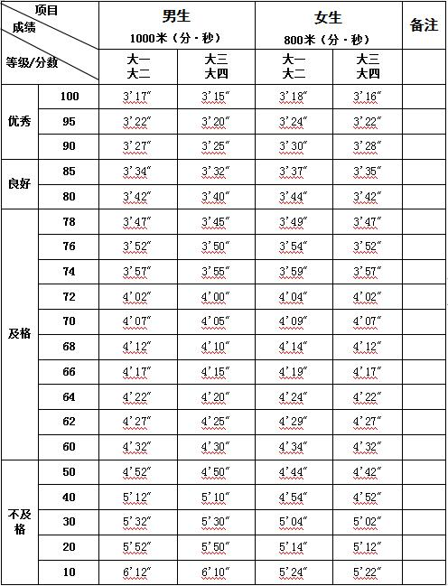

课程管理
|
课程名称 |
公共体育--太极拳（I） |
课程代码 |
TX031110 |
|
课程类型 |
√通识课 □学科（专业）基础课 □专业发展课 |
课程性质 |
√必修课 □选修课 |
|
开课单位 |
体育学院 |
适用专业 |
非体育专业 |
|
总学时数 |
36 |
周学时数 |
2 |
|
课程学分 |
1 |
编 写 人 |
李胜恒 |
|
编写时间 |
2017.07.20 |
审 批 人 |
刘其龙 |
一、教学目的
本课程以24式简化太极拳为主要锻炼形式，兼顾全面的身体素质练习， 以提高学生的健康水平，掌握锻炼方法和技能，为终身体育打好基础。本课程教学目的为：
1.使学生了解太极拳运动的基本常识和规律， 能够运用太极拳这一运动形式进行自我身体锻炼并逐步提高，学会欣赏高水平武术比赛。
2.熟练掌握武术基本功、24式简化太极拳等技术动作， 能够做到动作准确规范，体现出太极拳的风格特点。
3.通过教学使学生具有克服困难战胜对手的勇气和信心，培养学生勇敢、顽强、坚忍不拔的意志品质和乐观进取、勇于竞争的精神， 遵守武德，树立良好的道德风尚。
4.全面发展和提高各项身体素质，改善身体机能， 为今后运动能力和生活质量的提高打下基础。
二、重点与难点
（一）重点：武术自学自练的原则与方法；24式简化太极拳技术动作。
（二）难点：武术组合动作的创编； 掌握24式简化太极拳技术动作，体现太极拳的风格特点。
三、基本内容与要求
理论部分：
第1章 武术概述
1.1 武术的形成与发展
1.2 武术的内容和分类
1.3 武术的特点和作用
（一）教学目的：使学生明确武术及其相关的概念；掌握武术的起源、 历代发展概况、内容、分类、特点和作用，对武术有一个全面的认识和了解。
（二）重点与难点：武术的历代发展概况；武术的内容、分类、特点和作用。
（三）基本内容：武术的概念、起源和历代发展概况； 中华人民共和国成立后武术运动在国内外的发展情况；武术的内容、分类、特点和作用。
第2章 太极拳理论
2.1 太极拳的运动特点与健身原理
2.2 太极拳的主要动作
2.3 太极拳的教学特点
（一）教学目的：使学生了解太极拳的运动特点与健身原理； 掌握太极拳的教学步骤、要求和教学方法。
（二）重点与难点：太极拳的主要技术动作；太极拳的教学步骤和方法。
（三）基本内容：太极拳身体基本姿势要求；太极拳的运动特点与健身原理；太极拳各动作的要点； 太极拳的教学步骤、要求和教学方法。
技术部分：
第3章 24式简化太极拳
3.1 起势、左右野马分鬃、白鹤亮翅、左右搂膝拗步、手挥琵琶、倒卷肱
3.2 左拦雀尾、右拦雀尾、单鞭、云手、单鞭、高探马
3.3 右蹬脚、双峰贯耳、转身左蹬脚、左下势独立、右下势独立、左右穿梭
3.4 海底针、闪通背、转身搬拦捶、如风似闭、 十字手、收势
3.5 24式太极拳整套动作
（一）教学目的：使学生认识和了解太极拳这一运动形式，掌握太极拳的基本技法， 学会24式简化太极拳，运用太极拳这一形式进行自我身体锻炼并能逐步提高。
（二）重点与难点：技术动作中的白鹤亮翅、左拦雀尾、右拦雀尾、云手、转身左蹬脚、 转身搬拦捶等；掌握太极拳技术动作，体现太极拳的运动特点。
（三）基本内容：掤、捋、挤、按、采、挒、肘、靠等基本技法和各种步法； 24个基本技术动作。
第4章 身体素质——中长跑
4.1 起跑和起跑后的加速
4.2 途中跑、终点跑
4.3 中长跑的呼吸
4.4 全程跑：1000米（男生）、800米（女生）
（一）教学目的：通过教学使学生掌握起跑和起跑后的加速、途中跑、终点跑等中长跑的基本技术，学会正确的呼吸方式，发展耐力素质，进一步增强心肺功能。
（二）重点与难点：途中跑技术；中长跑的呼吸。
（三）基本内容：起跑和起跑后的加速、途中跑、终点跑等基本技术；全程跑。
四、授课内容学时分配
五、考核方式：
（一）考核方式：现场测试。
根据教学目的和要求，本课程的考核在学期末进行，考核内容结合本学期教学内容进行。综合成绩＝平时成绩×30%＋考试成绩×70%，其中平时成绩根据考勤、课堂表现进行评分，考试成绩＝技能考核成绩×70%＋身体素质成绩×30%。 身体素质为每学期的必考项目，考试内容为女子800米。
（二）考试内容： 24式简化太极拳、身体素质（女子800米）。
（三）评分标准 ：
1. 24式简化太极拳
（1）动作规格的分值（60分）
评分标准：凡动作规格（手形、手法、步法、平衡）不符者， 每出现一次扣1-2分，多次出现同一种错误，最多扣3分。
（2）劲力、协调的分值（20分）
评分标准：凡运劲顺达、力点准确，连贯圆活、手眼身法步协调配合者，给予满分。 轻微不符者，扣1-5分，显著不符者，扣6-10分，严重不符者，扣11-20分。
（3）精神、意识、速度、风格的分值（20分）
评分标准：凡神态自然、意识集中、速度适宜、风格突出者，给予满分。轻、微不符者， 扣1-5分，显著不符者，扣6-10分，严重不符者，扣11-20分。
2.身体素质（女子800米）：评分标准见表1。
六、教材与参考书目
（一）使用教材：
[1] 孙雄华,王文霞. 体育与健康. 北京：现代教育出版社，2013年3月.
（二）参考书目：
[1] 蔡仲林,周子华. 武术（第2版）. 北京：高等教育出版社,2009年6月.
[2] 李德印. 24式太极拳. 北京：北京体育大学出版社，2008年1月.
[3] 李德印. 24式太极拳教与学. 北京：北京体育大学出版社，2009年4月.
[4] 邱慧芳. 24式太极拳详解. 杭州：江苏科学技术出版社，2011年10月.
表1 身体素质考核评分标准
注：数据来源于国家学生体质健康标准（2014年修订）。